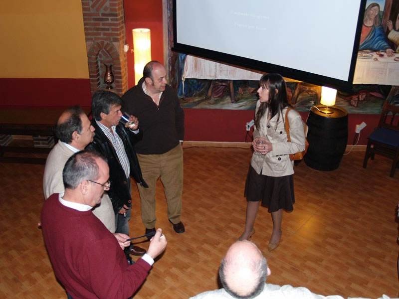

Encuentro en Santoña
Anterior
|
Inicio
|
Siguiente

Conocimos a la benjamina del Patronato, Belinda. Fijaros como se les ha cambiado la cara, no son ellos, si es que son muy mayores, no se les puede sacar de casa. Bueno, seguimos....